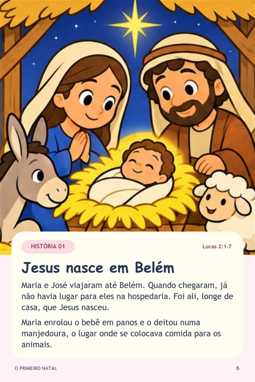
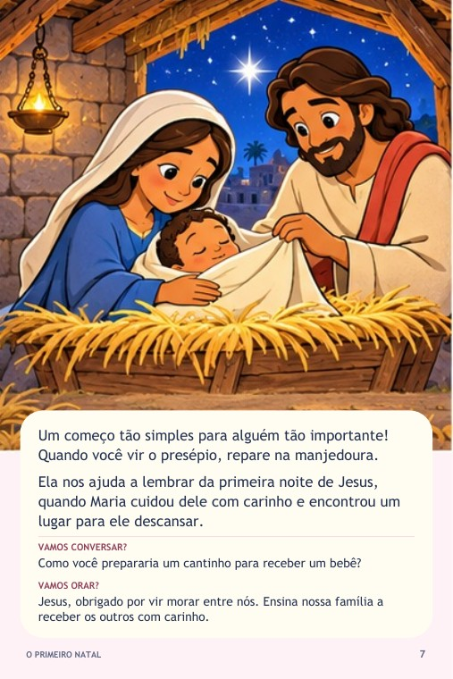
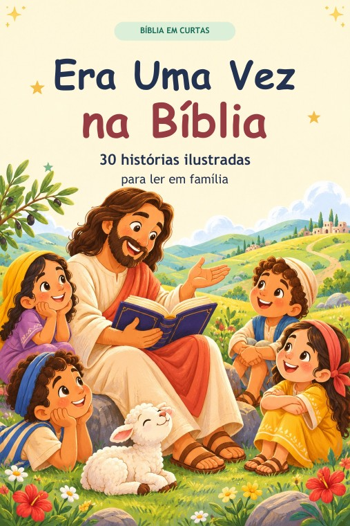

Antes de dormir
Escolha uma história e deixe a criança olhar as ilustrações enquanto você conta.
Na hora de dormir, escolha uma história, leia em voz alta e descubra o que mais chamou a atenção da criança. Um livrinho ilustrado para famílias com crianças de 5 a 8 anos.
Pagamento único. O link do livro chega no seu e-mail.



30históriasComo é por dentro
Seu filho pode acompanhar o que acontece enquanto você lê.
Quer ler a passagem na sua Bíblia? O livro mostra onde encontrá-la.
Leia um trecho, faça uma pausa e deixe a criança observar a cena.
Uma pergunta abre a conversa. Uma oração curtinha encerra a leitura.
Como usar
Escolha uma história e deixe a criança olhar as ilustrações enquanto você conta.
Pergunte o que ela faria no lugar do personagem. Se quiserem, terminem com a oração da página.
O conteúdo
O que você recebe
Pagamento único · entrega por e-mail
Toque em “Quero as 30 histórias” e escolha como pagar.
Assim que o pagamento for aprovado, você recebe o link do PDF.
Abra o livro no celular ou imprima as páginas que quiser ler.
Dúvidas
É um PDF digital. Dá para abrir no celular ou no tablet e imprimir as páginas que quiser.
Sim. O livro foi pensado para adultos lerem em voz alta com crianças de 5 a 8 anos.
Jesus nasce em Belém. As três primeiras histórias apresentam o primeiro Natal.
Depois que o pagamento for aprovado, você recebe por e-mail o link para abrir e baixar o PDF.